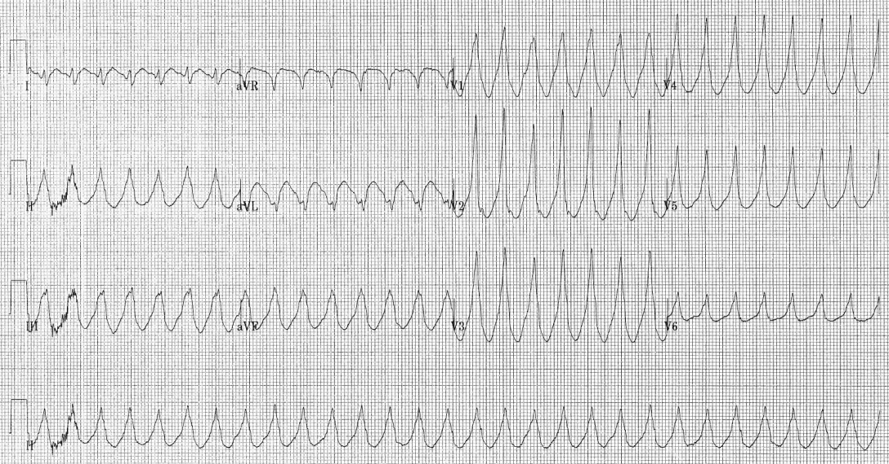

O que mata e a regra: polineuropatia aguda = GBS
Chegou fraqueza flácida arreflexa subindo — manda pra casa ou interna?
Conhecer os dois eixos de mortalidade, a faixa de IR e a regra de ouro da conduta na porta.
Insuficiência respiratória
Quando a progressão passa pelo tronco, o paciente pode não conseguir mais respirar / ventilar corretamente. 10 a 30% dos casos evoluem com insuficiência respiratória. Esse é o grande motivo de mortalidade.
Dois grandes motivos de óbito
- Questão respiratória
- Desautonomias (arritmia; hipotensão postural com queda)
| Motivo de óbito | Como mata na prática |
|---|---|
| Insuficiência respiratória (10–30%) | Intubação → CTI → infecção / TEP / complicações |
| Desautonomias | Arritmia · hipotensão postural · queda |
A regra de ouro da porta
Qualquer polineuropatia aguda, até que se prove o contrário, é Guillain-Barré. Essa regra vale independentemente de o quadro ter começado de cima para baixo ou de baixo para cima.
Partindo desse pressuposto, o paciente não pode ser mandado para casa. Motivos: pode evoluir com desautonomias e com insuficiência respiratória. Não é conduta "vai para casa e retorna se não melhorar" — pode não dar tempo.
Por que importa na prática: a mortalidade do GBS é de progressão e de CTI, não de "rótulo errado no prontuário".
Resumo operacional: polineuropatia aguda = GBS até provar → internar (CTI/semi) → liberar só se estável.

ECG 12-lead showing monomorphic ventricular tachycardia. Image created by Karthik Sheka, M.D., via Wikimedia Commons. Licensed under CC BY-SA 2.5. Source: https://commons.wikimedia.org/wiki/File:Electrocardiogram_of_Ventricular_Tachycardia.png
O traçado que não pode ser ignorado
Entre os 10–30% que vão para o CTI, a desautonomia é o segundo grande motivo de óbito. Arritmias como esta taquicardia ventricular não são "achado de monitor" — são causa de parada num paciente que já está com a ventilação comprometida. O ECG faz parte da vigilância tanto quanto a capacidade vital.
O exame que a prova adora — o liquor 4–40.
Quiz
Q1. A faixa de casos com insuficiência respiratória no GBS é:
Q2. Diante de polineuropatia aguda, a conduta de porta até prova em contrário é:
Q3. Os dois grandes motivos de óbito no GBS são: